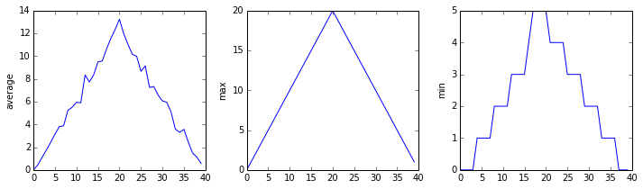

Repeating Actions with Loops
Overview
Teaching: 30 min
Exercises: 0 minQuestions
How can I do the same operations on many different values?
Objectives
Explain what a
forloop does.Correctly write
forloops to repeat simple calculations.Trace changes to a loop variable as the loop runs.
Trace changes to other variables as they are updated by a
forloop.
In the last episode, we wrote Python code that plots values of interest from our first
inflammation dataset (inflammation-01.csv), which revealed some suspicious features in it.

We have a dozen data sets right now, though, and more on the way. We want to create plots for all of our data sets with a single statement. To do that, we’ll have to teach the computer how to repeat things.
An example task that we might want to repeat is printing each character in a word on a line of its own.
word = 'lead'
In Python, a string is basically an ordered collection of characters, and every
character has a unique number associated with it – its index. This means that
we can access characters in a string using their indices.
For example, we can get the first character of the word 'lead', by using
word[0]. One way to print each character is to use four print statements:
print(word[0])
print(word[1])
print(word[2])
print(word[3])
l
e
a
d
This is a bad approach for three reasons:
-
Not scalable. Imagine you need to print characters of a string that is hundreds of letters long. It might be easier to type them in manually.
-
Difficult to maintain. If we want to decorate each printed character with an asterisk or any other character, we would have to change four lines of code. While this might not be a problem for short strings, it would definitely be a problem for longer ones.
-
Fragile. If we use it with a word that has more characters than what we initially envisioned, it will only display part of the word’s characters. A shorter string, on the other hand, will cause an error because it will be trying to display part of the string that doesn’t exist.
word = 'tin'
print(word[0])
print(word[1])
print(word[2])
print(word[3])
t
i
n
---------------------------------------------------------------------------
IndexError Traceback (most recent call last)
<ipython-input-3-7974b6cdaf14> in <module>()
3 print(word[1])
4 print(word[2])
----> 5 print(word[3])
IndexError: string index out of range
Here’s a better approach:
word = 'lead'
for char in word:
print(char)
l
e
a
d
This is shorter — certainly shorter than something that prints every character in a hundred-letter string — and more robust as well:
word = 'oxygen'
for char in word:
print(char)
o
x
y
g
e
n
The improved version uses a for loop to repeat an operation — in this case, printing — once for each thing in a sequence. The general form of a loop is:
for variable in collection:
# do things using variable, such as print
Using the oxygen example above, the loop might look like this:

where each character (char) in the variable word is looped through and printed one character
after another. The numbers in the diagram denote which loop cycle the character was printed in (1
being the first loop, and 6 being the final loop).
We can call the loop variable anything we like, but
there must be a colon at the end of the line starting the loop, and we must indent anything we
want to run inside the loop. Unlike many other languages, there is no command to signify the end
of the loop body (e.g. end for); what is indented after the for statement belongs to the loop.
What’s in a name?
In the example above, the loop variable was given the name
charas a mnemonic; it is short for ‘character’. We can choose any name we want for variables. We can even call our loop variablebanana, as long as we use this name consistently:word = 'oxygen' for banana in word: print(banana)o x y g e nIt is a good idea to choose variable names that are meaningful, otherwise it would be more difficult to understand what the loop is doing.
Here’s another loop that repeatedly updates a variable:
length = 0
for vowel in 'aeiou':
length = length + 1
print('There are', length, 'vowels')
There are 5 vowels
It’s worth tracing the execution of this little program step by step.
Since there are five characters in 'aeiou',
the statement on line 3 will be executed five times.
The first time around,
length is zero (the value assigned to it on line 1)
and vowel is 'a'.
The statement adds 1 to the old value of length,
producing 1,
and updates length to refer to that new value.
The next time around,
vowel is 'e' and length is 1,
so length is updated to be 2.
After three more updates,
length is 5;
since there is nothing left in 'aeiou' for Python to process,
the loop finishes
and the print statement on line 4 tells us our final answer.
Note that a loop variable is a variable that’s being used to record progress in a loop. It still exists after the loop is over, and we can re-use variables previously defined as loop variables as well:
letter = 'z'
for letter in 'abc':
print(letter)
print('after the loop, letter is', letter)
a
b
c
after the loop, letter is c
Note also that finding the length of a string is such a common operation
that Python actually has a built-in function to do it called len:
print(len('aeiou'))
5
len is much faster than any function we could write ourselves,
and much easier to read than a two-line loop;
it will also give us the length of many other things that we haven’t met yet,
so we should always use it when we can.
From 1 to N
Python has a built-in function called
rangethat generates a sequence of numbers.rangecan accept 1, 2, or 3 parameters.
- If one parameter is given,
rangegenerates a sequence of that length, starting at zero and incrementing by 1. For example,range(3)produces the numbers0, 1, 2.- If two parameters are given,
rangestarts at the first and ends just before the second, incrementing by one. For example,range(2, 5)produces2, 3, 4.- If
rangeis given 3 parameters, it starts at the first one, ends just before the second one, and increments by the third one. For example,range(3, 10, 2)produces3, 5, 7, 9.Using
range, write a loop that usesrangeto print the first 3 natural numbers:1 2 3Solution
Understanding the loops
Given the following loop:
word = 'oxygen' for char in word: print(char)How many times is the body of the loop executed?
- 3 times
- 4 times
- 5 times
- 6 times
Solution
Computing Powers With Loops
Exponentiation is built into Python:
print(5 ** 3)125Write a loop that calculates the same result as
5 ** 3using multiplication (and without exponentiation).Solution
Reverse a String
Knowing that two strings can be concatenated using the
+operator, write a loop that takes a string and produces a new string with the characters in reverse order, so'Newton'becomes'notweN'.Solution
Computing the Value of a Polynomial
The built-in function
enumeratetakes a sequence (e.g. a list) and generates a new sequence of the same length. Each element of the new sequence is a pair composed of the index (0, 1, 2,…) and the value from the original sequence:for idx, val in enumerate(a_list): # Do something using idx and valThe code above loops through
a_list, assigning the index toidxand the value toval.Suppose you have encoded a polynomial as a list of coefficients in the following way: the first element is the constant term, the second element is the coefficient of the linear term, the third is the coefficient of the quadratic term, etc.
x = 5 coefs = [2, 4, 3] y = coefs[0] * x**0 + coefs[1] * x**1 + coefs[2] * x**2 print(y)97Write a loop using
enumerate(coefs)which computes the valueyof any polynomial, givenxandcoefs.Solution
Key Points
Use
for variable in sequenceto process the elements of a sequence one at a time.The body of a
forloop must be indented.Use
len(thing)to determine the length of something that contains other values.